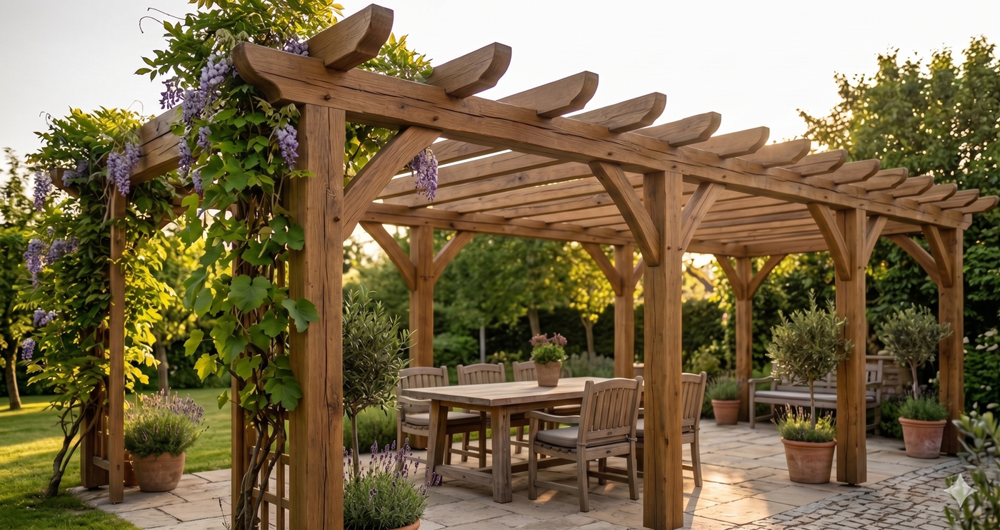
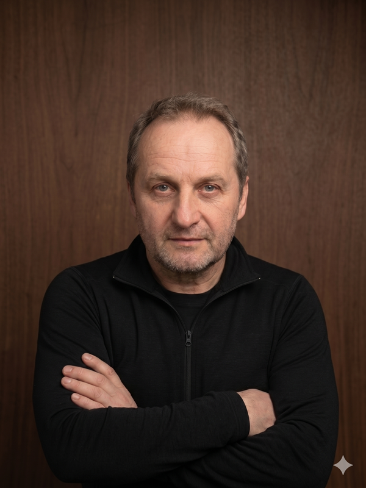
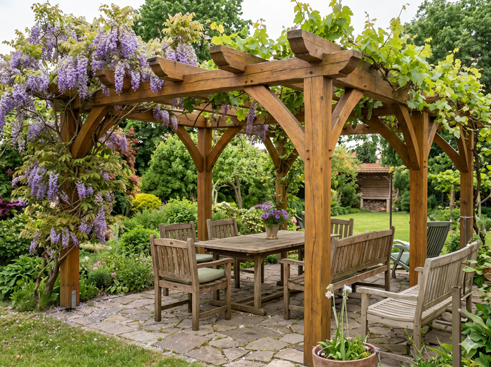
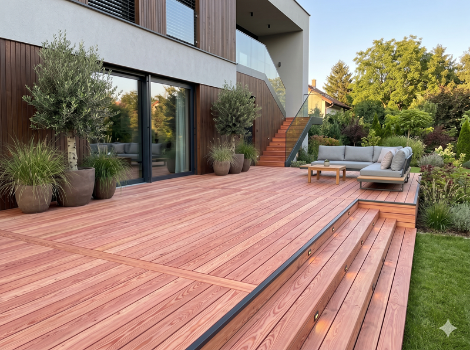
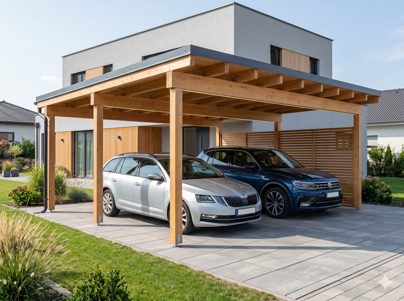
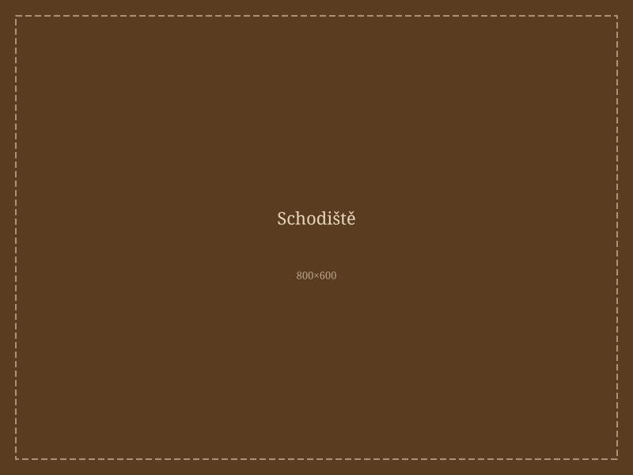
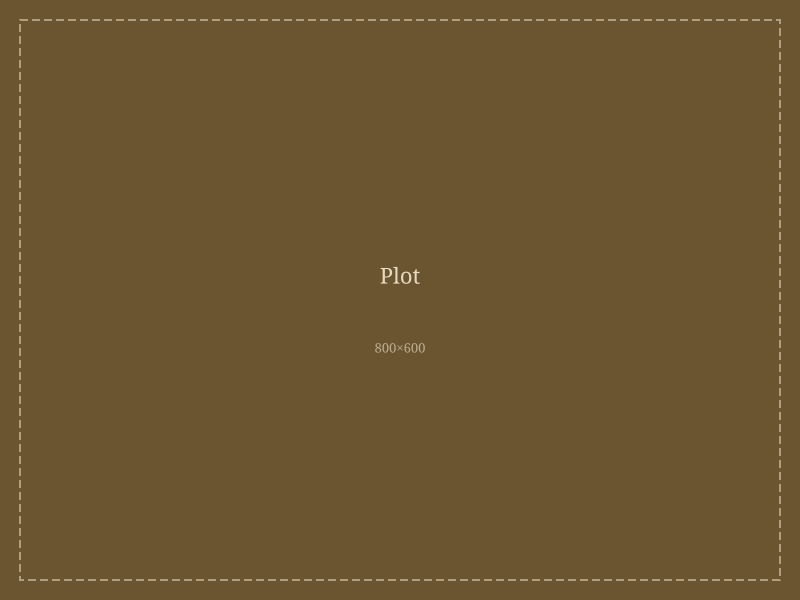
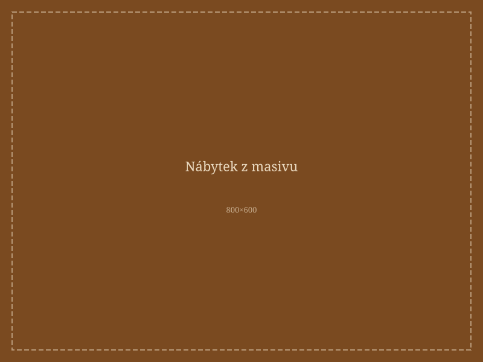

Služby
Co pro vás mohu zhotovit
Pergoly
Zakázková výroba dřevěných pergol pro zahradu i terasu – přírodní materiál, trvanlivé provedení.
Terasy
Dřevěné terasy z kvalitního řeziva, přizpůsobené vašemu pozemku a požadavkům.
Přístřešky pro auta
Pevné a estetické dřevěné přístřešky – ochrana vozidla s pěkným vzhledem.
Dřevěné fasády
Obkladové fasády z přírodního dřeva, které vydrží a skvěle vypadají.
Ploty
Dřevěné ploty a oplocení na míru – od jednoduchých laťkových až po masivní provedení.
Schodiště
Výroba a montáž dřevěných schodišť – interiér i exteriér, klasické i moderní tvary.
Nábytek z masivu
Stolky, lavice, police, skříně – vše z masivního dřeva, přesně podle vašeho přání.

O mně
Jmenuji se Václav Supik a tesařsko-truhlářskému řemeslu se věnuji již více než 20 let. Za tu dobu jsem realizoval stovky zakázek – od jednoduchých plotů a pergol až po složité střešní konstrukce a schodiště.
Pracuji výhradně s kvalitním, pečlivě vybraným dřevem. Každá zakázka je pro mě jedinečná a přistupuji k ní s plným nasazením. Záleží mi na spokojenosti zákazníka – proto vždy dbám na precizní provedení, dodržení dohodnutých termínů a férové jednání.
Nabízím bezplatnou konzultaci a nezávaznou cenovou nabídku přímo u vás. Neváhejte mě kontaktovat – rád se přijedu podívat a poradit.
- 20+ let zkušeností
- 500+ realizovaných zakázek
- 100% poctivá práce
Realizace
Ukázky hotových prací

Pergola na zahradu
Dubová pergola s okapnicí, Brno

Terasa z modřínu
Venkovní terasa 40 m², Blansko

Přístřešek pro dvě auta
Smrkový přístřešek, Vyškov

Interiérové schodiště
Masivní dub, Brno-venkov

Plot a brána
Laťkový plot z akátu, Kuřim

Jídelní stůl z masivu
Dubový stůl na zakázku, Tišnov
Reference
Co říkají zákazníci
„S prací pana Václava Supíka jsem byl velmi spokojený. Dělal mi stání pro dvě auta a terasu s pergolou a vše proběhlo bez problémů. Oceňuji hlavně jeho ochotu poradit s výběrem dřeva i celkovým řešením. Komunikace byla rychlá a na všem jsme se bez potíží domluvili. Výsledek je precizní a kvalitně odvedená práce. Určitě doporučuji."
„Objednal jsem přístřešek pro auta a plot. Pan Václav byl velmi ochotný, poradil s výběrem dřeva a navrhl nejlepší řešení. Výsledek předčil moje očekávání. Sousedé se pořád ptají, kde jsem to nechal dělat."
„Nechali jsme si vyrobit schodiště z dubového masivu a jsme nadšení. Precizní práce, krásné zpracování a pan Supik byl vždy k zastižení a komunikoval na výbornou. Určitě se obrátíme znovu."
Kontakt
Nezávazná poptávka nebo dotaz
Václav Supik
tesař–truhlář
- Telefon: +420 605 812 480
- E-mail: supikvaclav@seznam.cz
- Adresa: Komorní Lhotka 45, 739 53
- Oblast: Třinec, Frýdek-Místek, Český Těšín, Havířov a okolí
Pracovní doba:
Po–Pá: 7:00–17:00
So: po domluvě